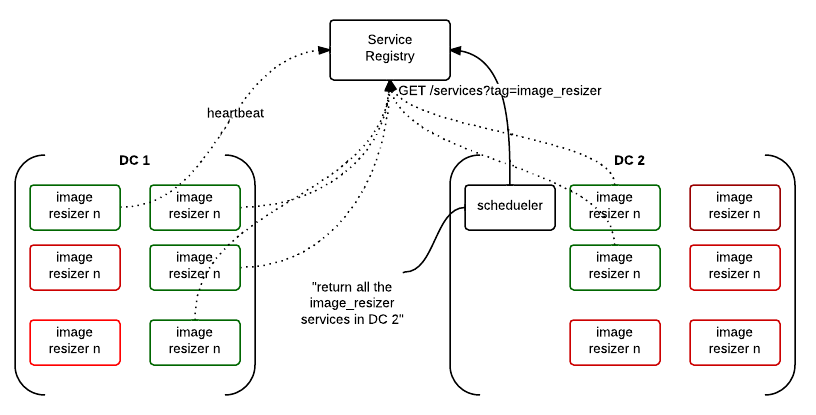
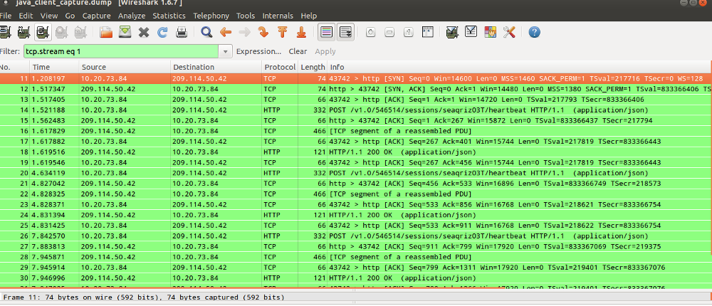
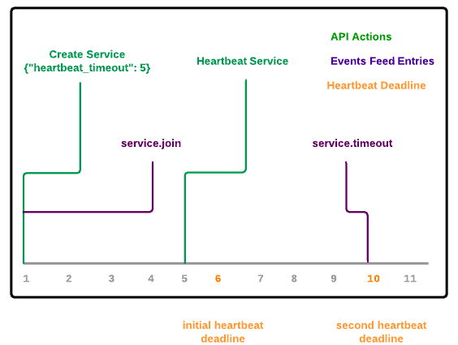
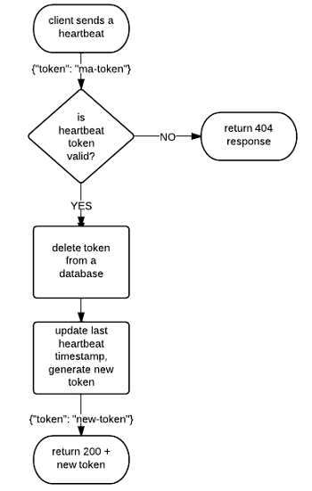
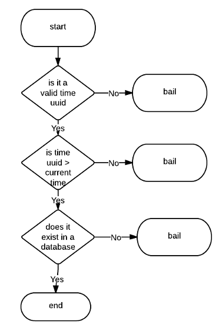
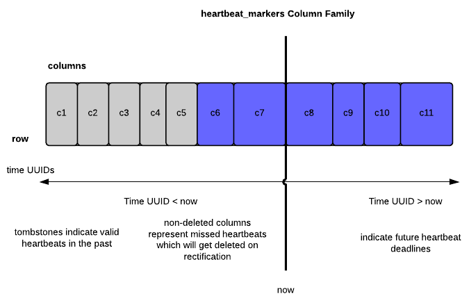

- Tomaz Muraus
- Cloudkick
- Cloud Monitoring
- Service Registry
- Stuff
Who am I?
Agenda
- What is Service Registry?
- Heartbeating in Service Registry (diving deeper)
- Cassandra 101 (sstables, tombstones, range queries)
- How heartbeating works?
- How we use Cassandra
- Q&A
Service Registry
What is Service Registry?
Service Registry is an API driven cloud service which allows you to keep track of your services and store configuration values in a centralized place and get notified when a value changes.
What is Service Registry?
- Three main groups of functionality
- Service Discovery
- Configuration Storage
- Platform for automation
Service Discovery

Configuration Storage

Platform for automation
{
"values": [
{
"type": "service.join",
"payload": {
"id": "dfw1-db1",
"heartbeat_timeout": 3,
"tags": [
"mysql"
],
"metadata": {
"region": "dfw",
"port": "3306",
"ip": "127.0.0.1",
"version": "5.5.24-0ubuntu0.12.04.1 (Ubuntu)"
}
}
},
{
"type": "configuration_value.update",
"payload": {
"old_value": null,
"new_value": "10.0.0.5",
"configuration_value_id": "/production/cassandra/listen_ip"
}
}
]
}
What is Service Registry?
- Focuses on applications / services not servers
- Small, focused service which does a couple of things well (small, modular utilities FTW!)
- Makes building large and highly available applications easier
Heartbeating in Service Registry
What is heartbeating?
- Heartbeating is letting us know that your service is still alive
- If we don't receive a heartbeat in defined time interval, we treat service as dead / timed out
What is heartbeating?

What is heartbeating?

How heartbeating works (high-level)

Validating the token (high-level)

Example heartbeat request
{
"token": "25e4e1d0-c18e-11e2-98ba-7426829cefcf"
}
- Token is a opaque string to the user
- For us, it's a Time UUID which contains a current heartbeat deadline
Implementing this on top of Cassandra
- Why Cassandra?
- We know it well
- Good distributed architecture and capabilities
- Easy to operate
- Matches our service HA and consistency requirements
Things to know about Cassandra
- Because of the underlying storage format* and the way deletes works, it's usually** a bad fit for:
- Queue like datasets
- Delete heavy datasets
* Log structured append only files (and sstables), not a unique problem to Cassandra
** Depends on data model and compaction strategy, there are ways to work around it
Distributed deletes and tombstones
- When a user deletes a column, it's not actually deleted. It's just marked to be deleted and converted to a tombstone
- Tombstones eventually get deleted during a minor or major compaction*
* It's complex and depends on multiple factors (is the deleted column located in multiple sstable files, etc.)
How do tombstones affect range query reads?

- Gimme a single column (e.g. c5) - no biggie, uses bloom filter and pointer to a offset in a sstable file, skips tombstones
- Gimme all the columns between c5 and c10 (inclusive) - huston, we have a problem (need to do late filtering)!
Service Registry, heartbeating and data model
CREATE COLUMNFAMILY heartbeat_markers ( KEY ascii PRIMARY KEY ) WITH comparator=uuid; ALTER COLUMNFAMILY heartbeat_markers WITH gc_grace_seconds=108000; ALTER COLUMNFAMILY heartbeat_markers WITH caching='keys_only';
- Row key is account id
- Column name is a Time UUID
- Column value contains a service id
How it works?
- On heartbeat, insert a new column (future deadline)
- On rectification, delete all the columns from START_TIME to NOW
- Rectification - repair on read (similar to Cassandra)
How it works?

How we avoid the tombstone problem?
- Cassandra 1.2.x has improved support for tombstone removal during minor compactions
- Low gc_grace_seconds
- Small range queries
- Rectifier service
- Sharding across multiple rows
Other possible ways to mitigate / avoid this problem
- Use a database which is more appropriate the type of data you store
- Re-create column family (TRUNCATE + remove data file)
More Info and Links
Thank You!